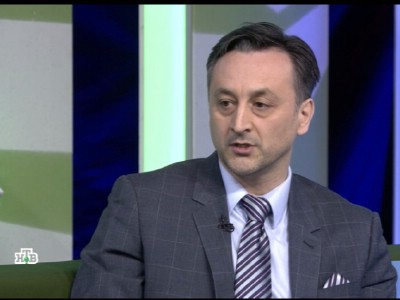

Публичная экспертность коллегии
Медиа.
Позиция,
которую слышат.
Телевидение, радио и федеральная пресса.
Эфиры и публикации, в которых адвокаты коллегии выступали экспертами или представляли интересы доверителей.
НТВДНКЗа граньюBusiness FMИзвестия

НТВ / За гранью01 / Главный эфир
Ахмед Шериев
в программе
«За гранью».
Запись федерального эфира с участием председателя коллегии.
Смотреть на НТВ02 / В эфире
Федеральное
телевидение.
Три выпуска из открытого архива. Остальные эфиры собраны в полном списке ниже.
03 / Полный архив
Эфиры.
Комментарии. Публикации.
Все материалы, перечисленные на действующей медиа-странице коллегии.
Показано: 22
01НТВ / ДНК
Ахмед Шериев в программе «ДНК»
02НТВ / За граньюАхмед Шериев в программе «За гранью»
03НТВ / За граньюАхмед Шериев в программе «За гранью»
04НТВ / ДНКАхмед Шериев в программе «ДНК»
05НТВ / За граньюАхмед Шериев в программе «За гранью»
Архивная запись06НТВ / За граньюАхмед Шериев в программе «За гранью»
Архивная запись07НТВ / За граньюАхмед Шериев в программе «За гранью»
Архивная запись08НТВ / За граньюАхмед Шериев в программе «За гранью»
09НТВ / ДНКАхмед Шериев в программе «ДНК»
10НТВ / ДНКВыпуск программы «ДНК» с участием адвоката
11Федеральный судьяНаталья Назарова в программе «Федеральный судья»
Архивная запись12Business FMКомментарий по делу о случайно заказанных ребёнком товарах
13Business FMКомментарий к законопроекту о потребительском экстремизме
14ВидеообзорАхмед Шериев и Expert Property — о недвижимости в Турции
Архивная запись15ИнтервьюИнтервью с адвокатом Ахмедом Шериевым
Архивная запись16ИзвестияКомментарий о приговоре по делу дорожного мастера
17Москва 24Комментарии адвоката Шериева телеканалу Москва 24
18Lenta.ruЗащита по уголовному делу банкира Матвея Урина
Архивная запись197ДнейЗащита чести и достоинства от преследований актёра
20КоммерсантъЗащита чиновника по уголовному делу о взятке
21РИА НовостиЗащита обвиняемого по делу «Белых волков»
Архивная запись22Первый каналЗащита по уголовному делу банды Лихова в КБР
Архивная записьЕсли отдельная ссылка больше не опубликована, материал отмечен как архивный и ведёт на исходную медиа-страницу коллегии.
Исходный архивДругой юридический вопрос?Помощь частным лицам